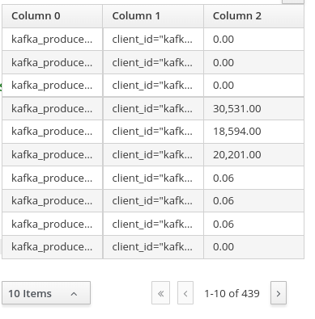
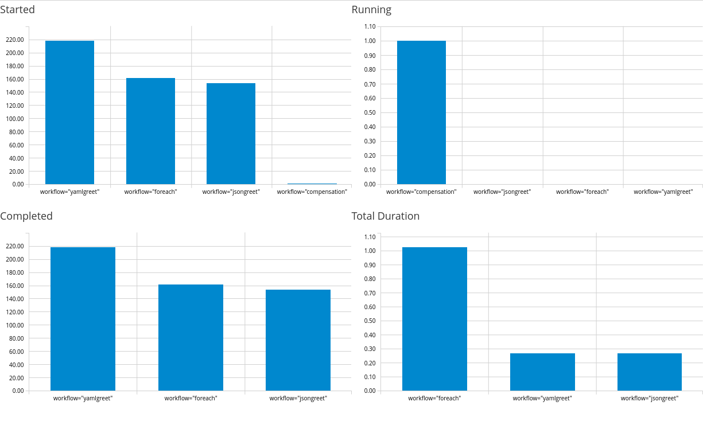
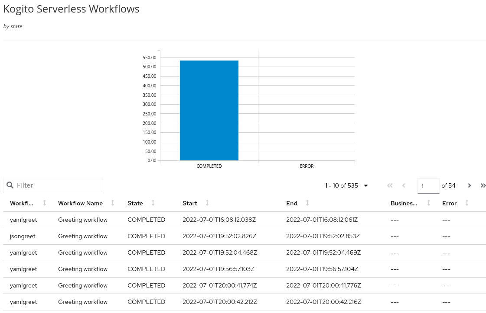

Displaying workflow data in dashboards
This document describes how you can build dashboards to monitor your workflows data.
To build the dashboards, you need data, which you can acquire from your workflows using one of the following methods:
-
Enable metrics
-
Integrate with Data Index to consume data using the REST API
-
Use custom mechanisms, such as
ProcessInstanceListener
The following sections describes the process of creating dashboards using metrics and Data Index GraphQL REST API.
Dashboards for workflows
The dashboards for workflows are visualization of data that run on the client side. The dashboards are created using Dashbuilder, which consumes data from any JSON source. You can define a dashboard in YAML format.
To use the Dashbuilder, download and uncompress the dashbuilder-client NPM package. Also, edit the setup.js file to link your YAML files. For more information about using Dashbuilder, see Dashbuilder documentation.
Building dashboards using metrics
You can build dashboards to monitor the data of your workflows using metrics.
-
A workflow application is created.
For more information about creating a workflow, see Creating your first workflow service.
-
To enable metrics for your workflows application add
org.kie.kogito:kogito-addons-quarkus-monitoring-prometheusdependency inpom.xmlfile of your application:Add metrics dependency topom.xmlfile<dependency> <groupId>org.kie.kogito</groupId> <artifactId>kogito-addons-quarkus-monitoring-prometheus</artifactId> </dependency>You can find the metrics in
/q/metricspath.The dashbuilder can consume the data of your workflow directly from the metrics endpoints. Therefore, you can use a JSONAta expression to format the metrics and display the metrics in a table using the following example of YAML code:
Example YAML to show metrics in a tabledatasets: - uuid: swf_metrics url: http://localhost:8080/q/metrics expression: >- $map($, function($l) { [ $l[0], $contains($l[1], "process_id") ? $replace($match($l[1], /process_id=".*?"/).match, "process_id", "workflow") : $l[1], $l[2] = "NaN" ? -1 : $l[2] ] } ) pages: - components: - settings: lookup: uuid: swf_metricsFigure 2. Example metrics in a table -
To extract a specific information from your workflow, use specific metrics. Metrics related to workflows include:
-
kogito_process_instance_completed_total: Completed workflows -
kogito_process_instance_started_total: Started workflows -
kogito_process_instance_running_total: Running workflows -
kogito_process_instance_duration_seconds_sum: Workflows total duration
When you display the metrics, you can filter the data to include the specific metrics. You can use the metrics and bar chart components in dashbuilder to display the specific metrics and after filtering the metrics, you can put the information in bar charts as shown in the following example YAML code:
Example YAML to display bar chartsdatasets: - uuid: metrics url: http://localhost:8080/q/metrics expression: >- $map($, function($l) { [ $l[0], $contains($l[1], "process_id") ? $replace($match($l[1], /process_id=".*?"/).match, "process_id", "workflow") : $l[1], $l[2] = "NaN" ? -1 : $l[2] ] } ) columns: - id: metric type: label - id: labels type: label - id: value type: number pages: - rows: - columns: - span: "6" components: - html: >- <p style="font-size: large">Started </p> - settings: type: BARCHART chart: resizable: 'true' width: '2000' lookup: uuid: metrics sort: - column: value sortOrder: DESCENDING filter: - column: metric function: EQUALS_TO args: - "kogito_process_instance_started_total" group: - columnGroup: source: labels groupFunctions: - source: labels - source: value - span: "6" components: - html: >- <p style="font-size: large">Running </p> - settings: type: BARCHART chart: resizable: 'true' width: '2000' lookup: uuid: metrics sort: - column: value sortOrder: DESCENDING filter: - column: metric function: EQUALS_TO args: - "kogito_process_instance_running_total" group: - columnGroup: source: labels groupFunctions: - source: labels - source: value - columns: - span: "6" components: - html: >- <p style="font-size: large">Completed </p> - settings: type: BARCHART chart: resizable: 'true' width: '2000' dataSetLookup: uuid: metrics sort: - column: value sortOrder: DESCENDING filter: - column: metric function: EQUALS_TO args: - "kogito_process_instance_completed_total" group: - columnGroup: source: labels groupFunctions: - source: labels - source: value - span: "6" components: - html: >- <p style="font-size: large">Total Duration </p> - settings: type: BARCHART chart: resizable: 'true' width: '2000' lookup: uuid: metrics sort: - column: value sortOrder: DESCENDING filter: - column: metric function: EQUALS_TO args: - "kogito_process_instance_duration_seconds_sum" group: - columnGroup: source: labels groupFunctions: - source: labels - source: valueFigure 3. Example workflow metrics dashboard -
If you are using Prometheus, you can use PROMQL with Prometheus REST API and transform the result to JSON format that is supported by dashbuilder to build the dashoards.
For more information about dashbuilder and Prometheus, see Creating Prometheus Dashboards using Dashbuilder.
Building dashboards using Data Index
Data Index is a service that contains all the data related to the execution of your workflow. The Data Index service is available during the development mode. By default, you can access the Data Index at localhost:8180.
The Data Index service uses GraphQL, so that dashbuilder can connect with the service using its REST API and transform the result to the supported format.
-
A workflow application is created.
For more information about creating a workflow, see Creating your first workflow service.
-
Go to the Data Index GraphQL interface (default to
localhost:8180/graphiql) and test your query.The following is an example of GraphQL query that lists all the workflows:
Example GraphQL query to retrieve all workflows{ ProcessInstances { processId processName state start end businessKey error {message} } } -
Run the GraphQL query.
When you run the query, note that the URL is modified to includes the query.
-
Copy the URL and modify
graphiqltographql.When you access the URL with
graphql, it returns the result in a JSON format as shown in the following example:GraphQL JSON result when using the query{ "data": { "ProcessInstances": [ { "processId": "yamlgreet", "processName": "Greeting workflow", "state": "COMPLETED", "start": "2022-07-01T16:08:12.038Z", "end": "2022-07-01T16:08:12.061Z", "businessKey": null, "error": null }, ] } }Internally, workflows are referenced as processes, therefore the
processIdis the workflow ID andprocessNameis the workflow name. -
Transform the response to the transform expression.
When you transform the response, note that the response includes the columns metdata for the data set.
Example transform expression to retrieve fields from JSON response{ "columns" :[ {"id": "Workflow Id", "type": "label"}, {"id": "Workflow Name", "type": "label"}, {"id": "State", "type": "label"}, {"id": "Start", "type": "label"}, {"id": "End", "type": "label"}, {"id": "Business Key", "type": "label"}, {"id": "Error", "type": "label"} ], "values" : $.data.ProcessInstances.[ processId, processName, state, start, end, businessKey ? businessKey : "", error ? error.message : ""] } -
Create your dashboard using the transform expression and the URL mentioned in the previous step.
Example dashboard created using Data Indexdatasets: - uuid: workflows url: http://localhost:8180/graphql/?query=%7BProcessInstances%7BprocessId%20processName%20state%20start%20end%20businessKey%20error%7Bmessage%7D%7D%7D%0A expression: >- { "columns" :[ {"id": "Workflow Id", "type": "label"}, {"id": "Workflow Name", "type": "label"}, {"id": "State", "type": "label"}, {"id": "Start", "type": "label"}, {"id": "End", "type": "label"}, {"id": "Business Key", "type": "label"}, {"id": "Error", "type": "label"} ], "values" : $.data.ProcessInstances.[ processId, processName, state, start, end, businessKey ? businessKey : "", error ? error.message : ""] } pages: - components: - settings: type: BARCHART lookup: uuid: workflows group: - columnGroup: source: State functions: - source: State - source: State function: COUNT - settings: lookup: uuid: workflowsThe previous example of dashboard contains bar chart that counts the workflow instances by
Stateand lists all the dashboards in a table.Following is the graphical dashboard resulted from the previous example:
Figure 4. Example dashboard created using Data Index
For more examples of dashboards, see Dashbuilder website.
Found an issue?
If you find an issue or any misleading information, please feel free to report it here. We really appreciate it!